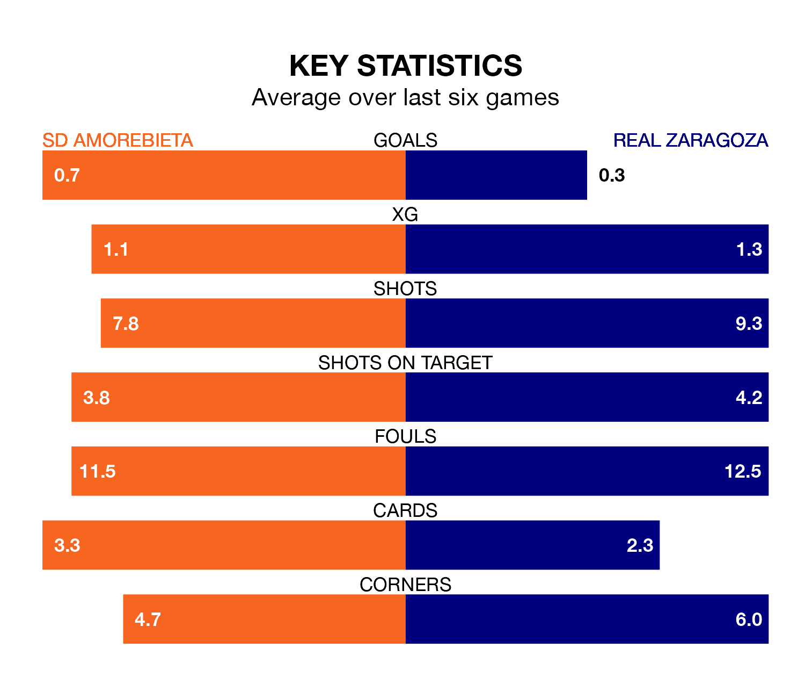

SD Amorebieta welcome Real Zaragoza to Instalaciones de Lezama Campo 2 on late Sunday looking to pick up points to end their three-game losing streak.
Amorebieta's struggles have left them with just four points from their last six Segunda División matches, while their opponents have earned five from a possible 18.
Amorebieta are 21st in the table after 19 games, of which they have won three and drawn five, earning 14 points.
Zaragoza are nine places ahead of SD Amorebieta in 12th, with seven wins and five draws putting them on 26 points.
With 16 goals in 19 games so far this season, the home team are the league's joint-third-lowest scorers with 0.8 goals per game. And they are conceding more than average, letting in 28 goals at a rate of 1.5 per game.
Real Zaragoza are also below average scorers, with 0.9 goals per game, compared to a league average of 1.2. They have also conceded 0.9 goals per game.
Amorebieta's Josué Dorrio Ortega is among the league's most creative players, racking up five assists in 19 appearances so far this season, and holding fourth spot in the Segunda División's assist charts.
For the visitors, Francisco Gámez López and Manu Vallejo have set up the most goals, having laid on two assists apiece to date.
Amorebieta's last match was on December 9, a 2-1 loss against Real Valladolid, with Manu Hernando getting the goal for SD Amorebieta.
Zaragoza drew 1-1 with RCD Espanyol last time out, on December 8, with Vallejo Galván on the scoresheet.
